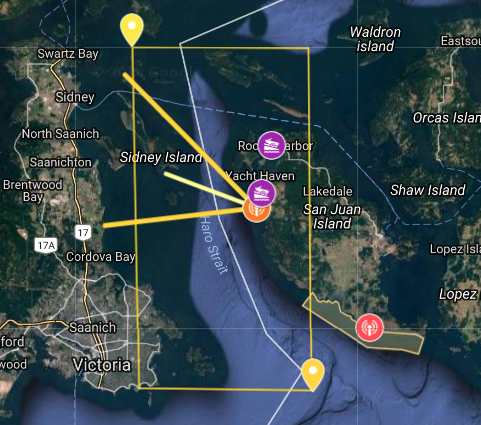

Quiet time for orcas: noise reduction strategies that can assist killer whales in their foraging and communication

Val Veirs, Orcasound Hydrophone Network
Scott Veirs, Beam Reach
Lauren McWhinnie, Patrick O’Hara, & Gregory O’Hagan, NEMES (Noise Exposure to the Marine Environment from Ships)
Salish Sea Ecosytem Conference, April 6, 2018
Orcasound app and Orcasound Lab


|
Our study site:
|
Thank you to everyone who backed our Kickstarter!
Potential impacts of noise on SRKWs
|

|
We know: SRKWs respond to noise
| 2003: U.S. Navy uses sonar in Haro Strait with SRKW behavior change observed by Center for Whale Research | |
 |
 |
| 2009: SRKWs "speak up" in noise from nearby boats (Holt, Noren, Veirs, Emmons & Veirs) |
Vessel noise can mask both calls & clicks
Frequencies of vessel noise overlap with SRKW hearing and signals Veirs, Veirs, & Wood (2016, PeerJ)
Veirs, Veirs, & Wood (2016, PeerJ)
|
It's already too loud!
We also know:
|
We have many options to "more than mitigate" vessel noise.
13% of ships radiate 1/2 the fleet's power

Veirs, Veirs, Williams, Jasny, & Wood (Authorea pre-print, March, 2017)
2017 vessel behavior and noise study
Collaboration with NEMES
 |

Continuous hydrophone and AIS data; intermittent images during daytime. |
 |
NEMES camera: source levels of boats
Video: NEMES images of 20-kt boat with computed range determining source level

12 hours of ships and boats

- Notice that 5 ships close together are not 5 times louder than one ship!
- They do take longer to pass by.
10 Weeks of Haro Strait Noise Statistics

Modeling the passby of a container ship

Slow the modeled ship from 20 to 11 kts

Decrease the source level by 3 dB

Reduce source level by total of 9 dB